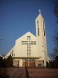

Adwentowy dzień skupienia 2023
Chrześcijańskie Braterstwo Osób Chorych i Niepełnosprawnych, grupa mistrzejowicka, oraz Wspólnota namARKA zapraszają na adwentowy dzień skupienia 16 grudnia 2023 r.

Kwesta przy parafii Podwyższenia Krzyża Świętego - podsumowanie
Pragniemy serdecznie podziękować wszystkim, którzy w ubiegłą niedzielę wsparli nas podczas zbiórki przy parafii Podwyższenia Krzyża Świętego